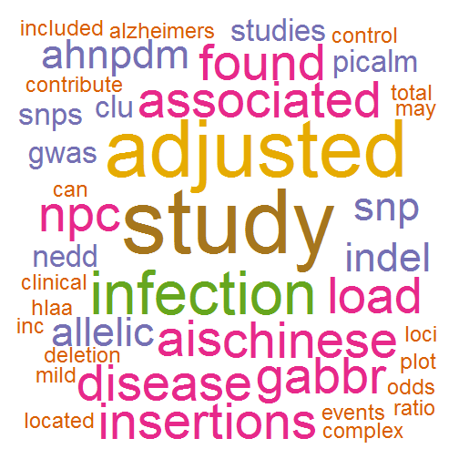
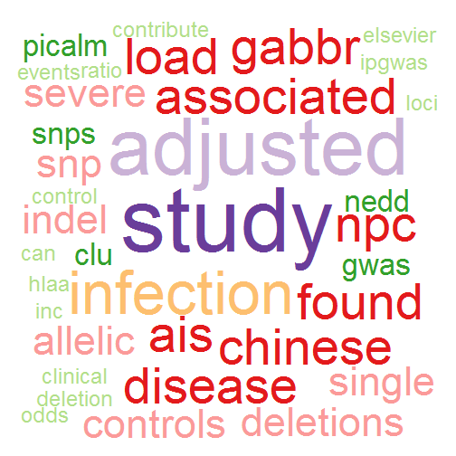
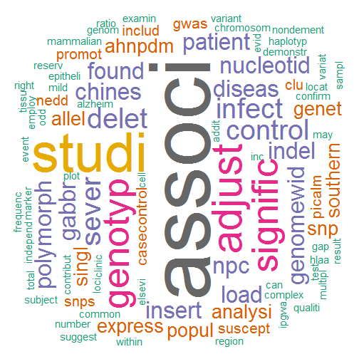
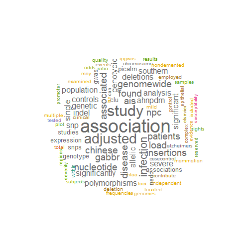
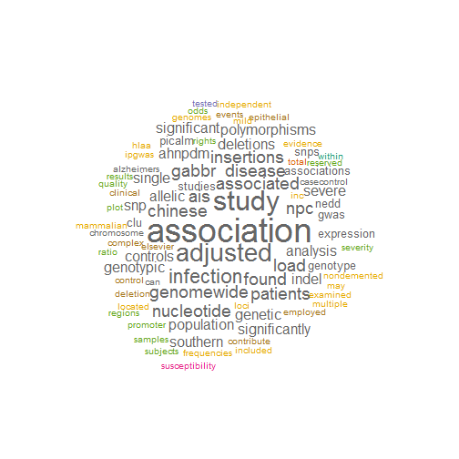
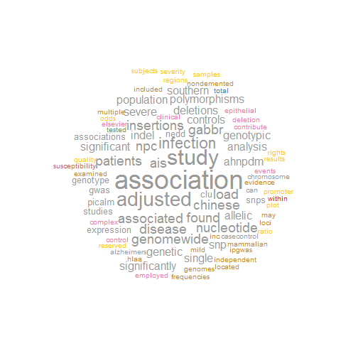
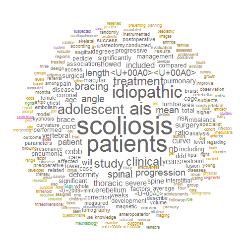
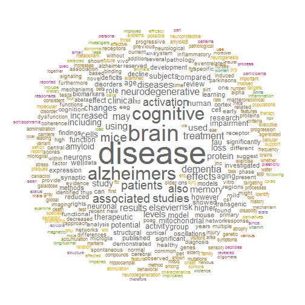

PubMed wordcloud
Examples of how to create a word cloud using abstracts in PubMed
updated on Tue Sep 24 17:18:48 2013
PubMedWordcloud is avaliable on CRAN and GitHub
install.packages("PubMedWordcloud",dependencies=TRUE)
library(PubMedWordcloud)
1. wordcloud of my publications
1.1 retrieve PMIDs from PubMed
Since my first paper was published in 2007, I will retrieve all PMIDs of my paper from 2007 to this year (2013). I used both 'Yan-Hui Fan' and 'Yanhui Fan' as my name, so I assigned PMIDs for these two names to 'pmid1' and 'pmid2', respectively.
pmid1 = getPMIDs(author = "Yan-Hui Fan", dFrom = 2007, dTo = 2013, n = 10)
pmid1
[1] "22698742" "22693232" "22564732" "22301463" "22015308" "21283797"
pmid2 = getPMIDs(author = "Yanhui Fan", dFrom = 2007, dTo = 2013, n = 10)
pmid2
[1] "20576513" "19412437"
There are six PMIDs in 'pmid1' and two PMIDs in 'pmid2'.
1.2 edit PMIDs
Note that 'pmid1' and 'pmid2' are vectors, so it is easy to add or delete PMIDs to 'pmid1' and 'pmid2', or combine them. I also write a function to do it, in case you do not want to find out how to do it.
PMID "22698742" in 'pmid1' and "20576513" in 'pmid2' are published by others (have the same name with me). So I want to exclude them and then combine 'pmid1' and 'pmid2'.
rm1 = "22698742"
pmids1 = editPMIDs(x = pmid1, y = rm1, method = "exclude")
rm2 = "20576513"
pmids2 = editPMIDs(x = pmid2, y = rm2, method = "exclude")
pmids = editPMIDs(x = pmids1, y = pmids2, method = "add")
Note: only unique PMIDs were kept
1.3 download abstracts
abstracts = getAbstracts(pmids)
1.4 clean abstracts
clean data using paackage {tm}: remove Punctuations, remove Numbers, Translate characters to lower or upper case, remove stopwords, remove user specified words, Stemming words.
cleanAbs = cleanAbstracts(abstracts)
1.5 plot wordcloud using 'plotWordCloud'
Plot with dafault parameters
plotWordCloud(cleanAbs)

Do not rotate words.
plotWordCloud(cleanAbs, rot.per = 0)

Plot using other colors.
colors = colSets(type = "Paired")
plotWordCloud(cleanAbs, rot.per = 0, colors = colors)

Clean the data with Stemming words is TRUE and plot again.
cleanAbs2 = cleanAbstracts(abstracts, stemDoc = TRUE)
plotWordCloud(cleanAbs2)

**Note: ** 'plotWordCloud' uasually will generate a lot of warnings. Many words could not be fit on page. 'pmWordCloud' can adjust the position and plot all words.
1.6 plot wordcloud using 'pmWordCloud'
pmWordCloud(cleanAbs, scale = 0.4)

pmWordCloud(cleanAbs, rot.per = 0, scale = 0.4)

colors = colSets(type = "Set1")
pmWordCloud(cleanAbs, rot.per = 0, colors = colors, scale = 0.4)

2. wordcloud of study about AIS (adolescent idiopathic scoliosis)
pmids = getPMIDsByKeyWords(keys = "adolescent idiopathic scoliosis", dFrom = 2010,
dTo = 2013)
abstracts = getAbstracts(pmids)
cleanAbs = cleanAbstracts(abstracts)
pmWordCloud(cleanAbs, rot.per = 0, scale = 0.4, min.freq = 3)

3. wordcloud of study about AD (Alzheimer's disease)
pmids = getPMIDsByKeyWords(keys = "Alzheimer's disease", dFrom = 2013, dTo = 2013,
n = 100)
abstracts = getAbstracts(pmids)
cleanAbs = cleanAbstracts(abstracts)
pmWordCloud(cleanAbs, rot.per = 0, scale = 0.4, min.freq = 8)

4. References
Shiny Pubmed Word Clouds
wordcloud
GOsummaries: Word cloud summaries of GO enrichment analysis
How I used R to create a word cloud, step by step
NCBI